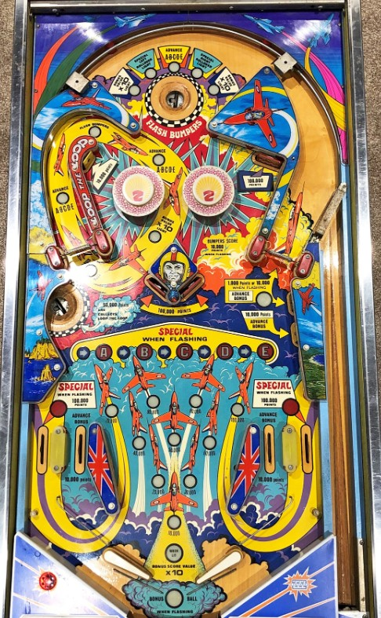

Try to plunge into the top saucer to make the pop bumpers and right spinner flash, then shoot either spinner all day for 10,000 points per spin. The left spinner rotates the Loop The Loop value; if Bonus Ball or Bonus Value x10 is lit, go for the left saucer to score 50,000 points and the lit award, but otherwise stick to spinners. Drop targets score 100,000 points, but are all in very dangerous locations. Completing the drops or making a saucer lit for Advance ABCDE makes progress on the arrow sequence in the center of the table, which can award a free game or add-a-ball.
The below picture of Aerobatics' playfield was taken from the Internet Pinball Database, where it was initially provided by Darrin Farr.
The top saucer has 5 award options: Bonus x10, Light Left Outlane Special, Advance A-B-C-D-E, Light Right Outlane Special, and Bonus x10 (again). Making the top saucer scores 50,000 points and the lit award, and also makes the pop bumpers and right spinner flash for the rest of the ball. The lit top saucer award is changed when the top saucer is made, when the green standup target on the right is hit, or on each spin of the right spinner.
The left spinner always scores 10,000 points per spin. Each spin of the spinner rotates which Loop The Loop award is lit: Bonus Ball, Advance A-B-C-D-E, Flash Bumpers, Advance A-B-C-D-E (again), or Bonus x10. Shooting the left saucer scores 50,000 points and collects the Loop The Loop award, and also rotates the lit award one step.
A line of inserts across the center of the table depicts the A-B-C-D-E sequence. There are 10 steps to this sequence: an arrow, then A, then another arrow, then B, and so on, up to E. There are three ways to advance the lit symbol in this sequence by one step:
If you advance the A-B-C-D-E sequence to a letter and that letter starts flashing, making one more A-B-C-D-E advance will award a Special. This Special can score either a free game or an add-a-ball. Advancing past E returns the sequence to the arrow before A.
Making the top saucer at any time, or making the left saucer when Flash Bumpers is the lit Loop The Loop award, causes the pop bumpers and the right spinner to start flashing. Pop bumpers award 1,000 points when lit and 10,000 when flashing. The right spinner awards 1,000 per spin when not lit or 10,000 per spin when flashing. The green standup target on the right awards 1 bonus advance, plus 1,000 points if the spinner is not lit or 10,000 if it is flashing. The yellow standup target on the right always scores 10,000 points and a bonus advance.
Aerobatics has two flavors of extra balls. The out lane Specials always award a Bonus Ball. A Bonus Ball is an additional ball played after the current ball ends. There is a maximum of one Bonus Ball per ball in play; however, you can "chain" Bonus Balls together by earning another Bonus Ball during what is already a Bonus Ball.
The A-B-C-D-E Special awards an add-a-ball when it is not set to award a free game. The add-a-ball increases the "balls to play" on the backglass by 1. Multiple add-a-balls can be earned during one ball in play, and you can also earn both an add-a-ball and a Bonus Ball in the same turn.
If you have a Bonus Ball and the bumpers and right spinner are flashing, they will not stop flashing when you drain; the bumper and spinner status only resets when the "balls to play" counter decreases.
Aerobatics has a nearly conventional in/out lane setup. However, part of the rail separating the in and out lanes is cut off. A ball rolling up a flipper quickly can roll through this gap and fall out, but a ball going down and out lane can be nudged off a small pin in the out lane and knocked back into play. In lanes score 10,000 points and a bonus advance. Out lanes score 100,000 points, as well as a Bonus Ball when flashing; make the out lanes flash by collecting the Light Left/Right Special Rollovers award from the top saucer.
Bonus is advanced by in lanes or either of the two standup targets in the middle-right. Each bonus advance is worth 10,000 points in base bonus rather than the traditional 1,000. The only bonus multiplier is 10x, which can be earned by making either the top or left saucers when they are lit for Light Bonus 10x. Max bonus is 10x 100,000 = 1,000,000 points. There is no mid-ball bonus collect or bonus holdover of any kind. 10x Bonus is never given for free. The first bonus advance is also never given for free, making it possible to drain with 0 bonus (or even 10x 0 bonus, interestingly). Tilt ends the ball in play only.